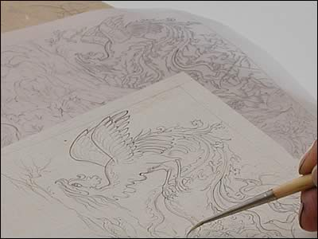

Tracing
Artists often reused designs by tracing pictures onto sheets of thin deer skin. Another studio practice was 'pouncing,' where the lines of a tracing would be pierced with tiny pinpricks. This stencil would then be placed over a new sheet of paper and dusted with fine red or yellow ochre, leaving a faint dotted outline.
| ||
| ...previous | next... | |